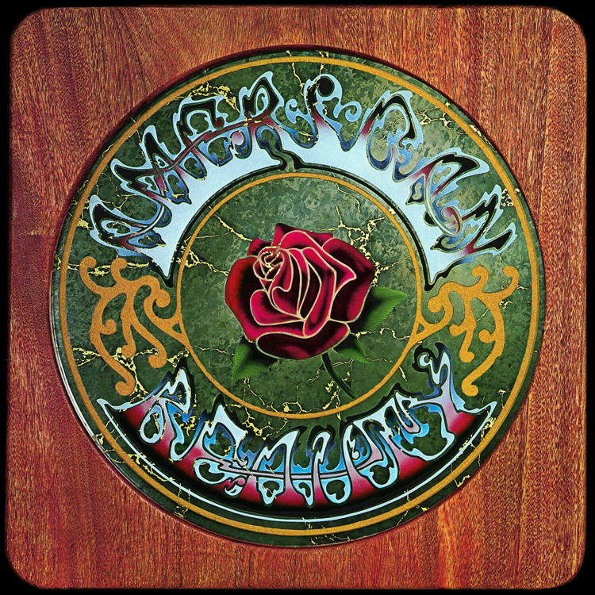

"Sugar Magnolia"
A song written by Robert Hunter and Bob Weir in 1970
This is one of the many great songs released by The Grateful Dead on their American Beauty album from 1970.
That album is a classic for many reasons, but certainly one of its distinguishing features is its diversity of themes and moods.
This song appears third on the album, coming after “Box of Rain” and “Friend of the Devil,” and is a burst of pure abandoned joy, in contrast to its more serious and sombre predecessors.
As we look at (and listen to) the lyrics, I think it’s easy to see many parallels to the song “Shady Grove.” They both present images of an idealized female, they both mix descriptions of this idealized woman with descriptions of nature, and they both sometimes blur the lines between the two – starting with the song titles: just as “Shady Grove” could refer to someplace in nature, or to a woman of that name, “Sugar Magnolia” could refer to a magnolia tree, or to a woman being identified by that name.
Sugar Magnolia, blossom’s blooming,
Head’s all empty and I don’t care.
Saw my baby down by the river:
Knew she’d have to come up soon for air.
This first verse lays out all the motifs that will be extended in the rest of the song:
- A celebration of the rich lushness of summer;
- A joyful surrender to the senses;
- An abandonment of strict rationality in favor of poetic whimsy;
- An appreciation of nature;
- An appreciation for the singer’s partner;
- An appreciation for the partner’s joy, energy and independence.
Sweet blossom, come on, under the willow,
We can have high times if you’ll abide.
We can discover the wonders of nature
Rolling in the rushes down by the riverside.
She’s got everything delightful;
She’s got everything I need.
Takes the wheel when I’m seeing double,
Pays my ticket when I speed.She come skimming through rays of violet
She can wade in a drop of dew
She don’t come and I don’t follow
Waits backstage while I sing to youShe can dance a Cajun rhythm,
Jump like a Willys in four wheel drive.
She’s a summer love in the spring, fall and winter:
She can make happy any man alive.Sugar magnolia
Ringin’ that blue bell
Caught up in sunlight
Come on out singing
I’ll walk you in the sunshine
Come on honey, come along with meShe’s got everything delightful
She’s got everything I need
A breeze in the pines in the summer night moonlight
Crazy in the sunlight yes indeedSometimes when the cuckoo’s crying
When the moon is halfway down
Sometimes when the night is dying
I take me out and I wander round
I wander roundSunshine daydream
Walking through the tall trees
Going where the wind goes
Blooming like a red rose
Breathing more freely
Light out singing
I’ll walk you in the morning sunshine
Sunshine daydream
Walk you in the sunshine
September 10, 2023